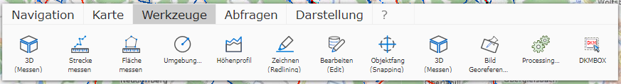

General Tools

Under Tools, the following tools are available (depending on the map author’s settings):
- Measure Distance
- Measure Area
- Buffer Circle
- Elevation Profile
- Drawing (Redlining)
- Drawing (Map Markup & Annotations)
- Editing (Edit)
- Georeferencing
- Georeferencing Images
- 3D Measurement